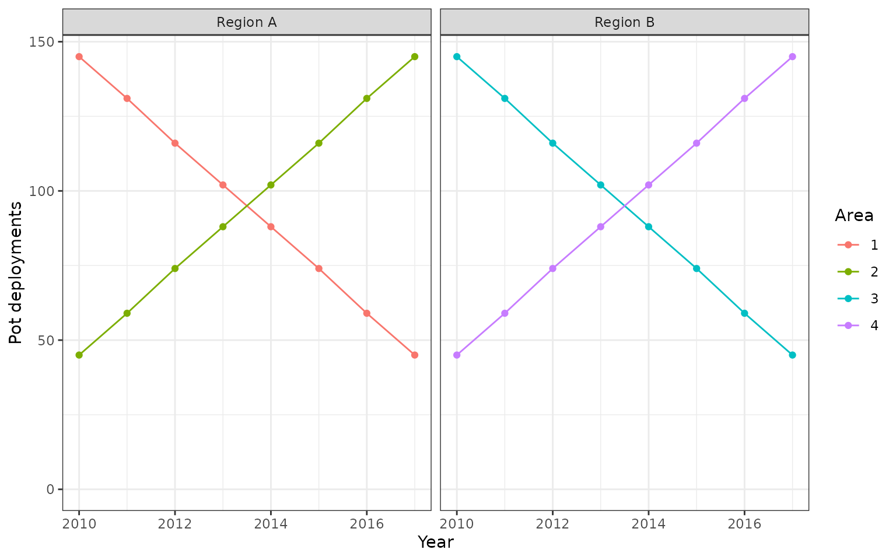
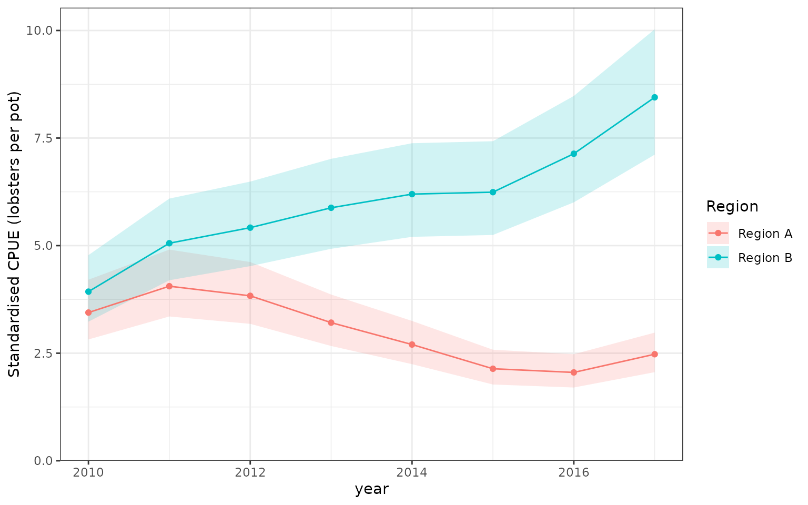
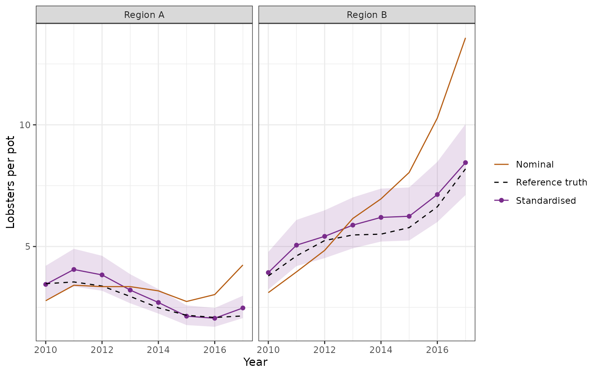
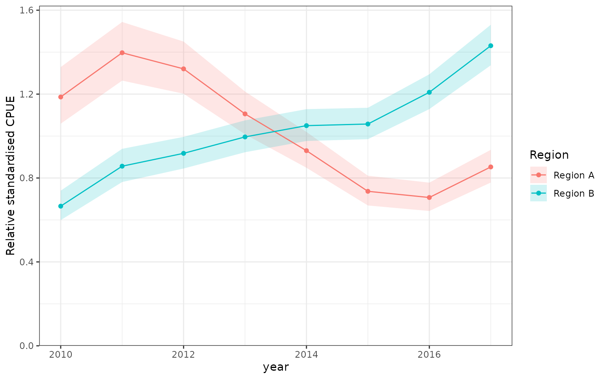
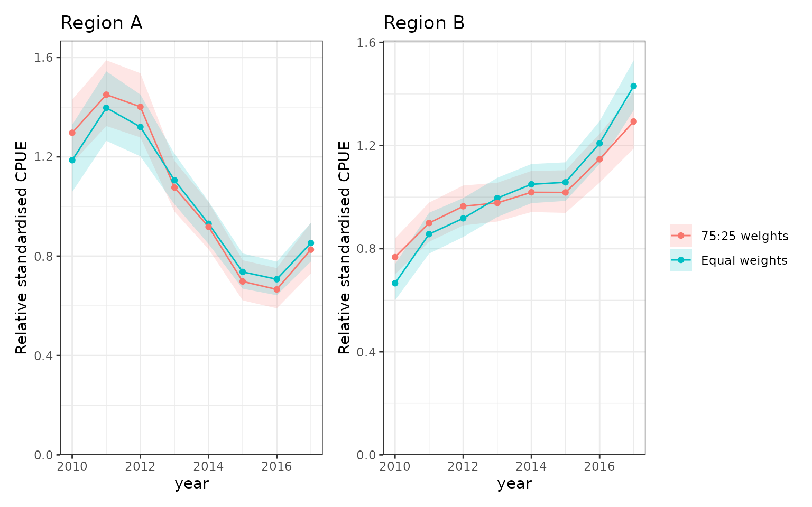
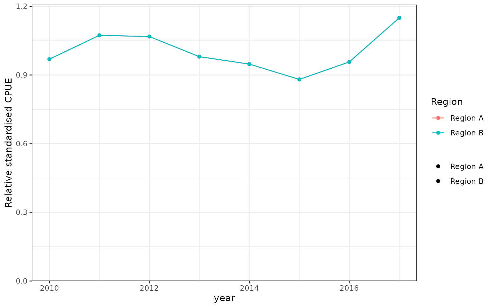

Two regions, one fitted model
Suppose four statistical areas are to supply two assessment series: Region A contains areas 1 and 2, and Region B contains areas 3 and 4. We fit one model to all observations, then average its response predictions over a fixed reference population within each region. There is no regional refitting, and no new regional extraction function is needed.
The workflow is cpue_index() for calculation,
index_table() for reporting, index_vcov() for
annual covariance, and plot_compare() for the two curves.
See CPUE indices for the general API and
uncertainty definitions. Here the target is standardised
expected CPUE, not a year coefficient, a sum of coefficients,
or area-integrated biomass.
Simulated observations and known truth
This separate simulation leaves the main lobster example unchanged. Each row is one pot deployment, so the integer response is already lobsters per pot. The modelled response could instead be another CPUE measure, with a suitable observation distribution. If modelling counts with variable effort, include that exposure in the model and predict at one unit of exposure.
There are eight years, four areas, vessel effects, and changing depth, soak time, and sampling allocations. Every area/year combination is observed, but some have substantially fewer observations than others. Areas have different underlying trends, so the two regional indices have something meaningful to reveal.
set.seed(1809)
years <- as.character(2010:2017)
areas <- as.character(1:4)
area_region <- data.frame(area = areas,
region = c("Region A", "Region A", "Region B", "Region B"))
# Expected CPUE at a zero vessel effect; also used for the reference truth.
expected_cpue <- function(d) {
t <- (as.numeric(as.character(d$year)) - 2010) / 7
a <- match(as.character(d$area), areas)
exp(log(3) + c(-0.25, 0.3, -0.1, 0.35)[a] +
c(-0.9, -0.3, 0.25, 1.0)[a] * t + 0.12 * sin(2 * pi * t) +
0.018 * (d$depth - 50) + 0.025 * (d$soak - 24))
}
cells <- expand.grid(year = years, area = areas, stringsAsFactors = FALSE)
t <- (as.numeric(cells$year) - 2010) / 7
cells$n <- round(45 + 100 * ifelse(cells$area %in% c("1", "3"), 1 - t, t))
regional_data <- cells[rep(seq_len(nrow(cells)), cells$n), c("year", "area")]
rownames(regional_data) <- NULL
n <- nrow(regional_data)
t <- (as.numeric(regional_data$year) - 2010) / 7
regional_data$year <- factor(regional_data$year, levels = years)
regional_data$area <- factor(regional_data$area, levels = areas)
regional_data$region <- area_region$region[match(regional_data$area, areas)]
regional_data$depth <- runif(n, 30, 65) + 10 * t
regional_data$soak <- runif(n, 12, 30) + 8 * t
regional_data$vessel <- factor(sample(sprintf("V%02d", 1:18), n, replace = TRUE))
vessel_effect <- rnorm(18, sd = 0.25)
mu <- expected_cpue(regional_data) * exp(vessel_effect[regional_data$vessel])
regional_data$cpue <- rnbinom(n, mu = mu, size = 8)
cells$region <- area_region$region[match(cells$area, areas)]
ggplot(cells, aes(as.numeric(year), n, colour = area)) +
geom_line() + geom_point() + facet_wrap(~ region) +
scale_y_continuous(limits = c(0, NA)) +
labs(x = "Year", y = "Pot deployments", colour = "Area")
Simulated sampling allocations by statistical area and year. Region A comprises areas 1 and 2, and Region B comprises areas 3 and 4. Sampling shifts towards areas 2 and 4 over time, although every area/year cell remains observed. These changing sample counts are not the reference weights used for standardisation.
Allow different area trends
The year * area interaction supplies an area-specific
effect in every year, with depth and soak effects shared across all
areas. The vessel random intercept accounts for persistent vessel
differences in fitting.
regional_fit <- glmmTMB::glmmTMB(
cpue ~ year * area + depth + soak + (1 | vessel),
family = glmmTMB::nbinom2(), data = regional_data
)
stopifnot(regional_fit$fit$convergence == 0, regional_fit$sdr$pdHess)This example uses ML, and its index predictions set vessel effects to
zero. That means a zero-effect vessel on the log scale,
not integration over the vessel population. This
follows the native
glmmTMB prediction convention for re.form = NA. The
simulated truth below uses the same target. Selective retention of
random effects and REML index extraction are outside this example and
the current glmmTMB response-index adapter.
Define a fixed regional reference
For each region, use its two areas equally, and four common depth/soak profiles equally within each area. These profiles lie within the simulated covariate support in every year. Their weights stay fixed across years: annual changes in where or how fishing occurred cannot redefine the target.
For region and year , the calculation is
Average on the response scale, before any normalisation. Do not average link predictions, already normalised area curves, SDs, or CVs.
profiles <- expand.grid(depth = c(45, 60), soak = c(21, 29))
reference <- merge(area_region, profiles, by = NULL)
reference$area <- factor(reference$area, levels = areas)
reference$weight <- 0.5 / nrow(profiles)
references <- split(reference, reference$region)
knitr::kable(reference, digits = 3, row.names = FALSE)| area | region | depth | soak | weight |
|---|---|---|---|---|
| 1 | Region A | 45 | 21 | 0.125 |
| 2 | Region A | 45 | 21 | 0.125 |
| 3 | Region B | 45 | 21 | 0.125 |
| 4 | Region B | 45 | 21 | 0.125 |
| 1 | Region A | 60 | 21 | 0.125 |
| 2 | Region A | 60 | 21 | 0.125 |
| 3 | Region B | 60 | 21 | 0.125 |
| 4 | Region B | 60 | 21 | 0.125 |
| 1 | Region A | 45 | 29 | 0.125 |
| 2 | Region A | 45 | 29 | 0.125 |
| 3 | Region B | 45 | 29 | 0.125 |
| 4 | Region B | 45 | 29 | 0.125 |
| 1 | Region A | 60 | 29 | 0.125 |
| 2 | Region A | 60 | 29 | 0.125 |
| 3 | Region B | 60 | 29 | 0.125 |
| 4 | Region B | 60 | 29 | 0.125 |
The reference table deliberately has no year column. Keep the full
fitted factor levels even when a regional table contains just two areas.
The region label is bookkeeping, not an additional
predictor in this model.
calculate_regions <- function(fit, refs, rescale = "raw", uncertainty = "auto") {
lapply(refs, function(ref) cpue_index(
fit, year = "year", method = "standardised",
reference_data = ref[c("area", "depth", "soak")],
reference_weights = ref$weight, rescale = rescale,
uncertainty = uncertainty, units = "lobsters per pot"
))
}
regional_indices <- calculate_regions(regional_fit, references)
regional_tables <- do.call(rbind, lapply(names(regional_indices), function(r) {
data.frame(Region = r, index_table(regional_indices[[r]]), row.names = NULL)
}))
knitr::kable(regional_tables[c("Region", "Year", "Mean", "SD", "CV",
"Qlower", "Qupper")], digits = 3, row.names = FALSE)| Region | Year | Mean | SD | CV | Qlower | Qupper |
|---|---|---|---|---|---|---|
| Region A | 2010 | 3.444 | 0.352 | 0.102 | 2.819 | 4.208 |
| Region A | 2011 | 4.057 | 0.394 | 0.097 | 3.354 | 4.908 |
| Region A | 2012 | 3.834 | 0.364 | 0.095 | 3.182 | 4.619 |
| Region A | 2013 | 3.210 | 0.303 | 0.094 | 2.668 | 3.864 |
| Region A | 2014 | 2.701 | 0.255 | 0.094 | 2.245 | 3.250 |
| Region A | 2015 | 2.139 | 0.205 | 0.096 | 1.772 | 2.581 |
| Region A | 2016 | 2.053 | 0.196 | 0.096 | 1.702 | 2.476 |
| Region A | 2017 | 2.476 | 0.233 | 0.094 | 2.059 | 2.978 |
| Region B | 2010 | 3.931 | 0.392 | 0.100 | 3.233 | 4.779 |
| Region B | 2011 | 5.056 | 0.481 | 0.095 | 4.195 | 6.093 |
| Region B | 2012 | 5.418 | 0.498 | 0.092 | 4.524 | 6.488 |
| Region B | 2013 | 5.880 | 0.531 | 0.090 | 4.926 | 7.018 |
| Region B | 2014 | 6.197 | 0.552 | 0.089 | 5.204 | 7.380 |
| Region B | 2015 | 6.243 | 0.553 | 0.089 | 5.247 | 7.427 |
| Region B | 2016 | 7.136 | 0.628 | 0.088 | 6.006 | 8.478 |
| Region B | 2017 | 8.447 | 0.740 | 0.088 | 7.115 | 10.028 |
Both series come from the same regional_fit. Neither
calculating another reference nor drawing another plot refits it. The
table’s SD is uncertainty in the estimated index, not the spread of
individual responses.
plot_compare(regional_indices) + labs(colour = "Region", fill = "Region")
Two standardised regional CPUE series from one negative-binomial glmmTMB fit. Each region averages its two areas equally over the same four depth/soak profiles, with vessel effects set to zero. Ribbons are pointwise 95% delta-method confidence intervals, including dependence among the weighted reference predictions. These are expected-response indices, not area-integrated biomass.
Compare with known truth and nominal CPUE
The known reference truth is obtained by applying exactly the same weights and profiles to the simulation’s expected response. Nominal CPUE is the arithmetic observed mean within each region/year; its composition and vessel mixture change with the observations. Consequently, nominal and standardised values do not estimate the same reference population.
truth <- do.call(rbind, lapply(names(references), function(r) {
ref <- references[[r]]
data.frame(Region = r, Year = years, Truth = vapply(years, function(y) {
d <- ref
d$year <- y
weighted.mean(expected_cpue(d), ref$weight)
}, numeric(1)))
}))
nominal <- aggregate(cpue ~ year + region, data = regional_data, FUN = mean)
comparison <- merge(regional_tables, truth, by = c("Region", "Year"))
comparison <- merge(comparison, nominal, by.x = c("Region", "Year"),
by.y = c("region", "year"))
ggplot(comparison, aes(as.numeric(Year))) +
geom_ribbon(aes(ymin = Qlower, ymax = Qupper), fill = "#792B8B", alpha = 0.15) +
geom_line(aes(y = Mean, colour = "Standardised")) +
geom_point(aes(y = Mean, colour = "Standardised")) +
geom_line(aes(y = Truth, colour = "Reference truth"), linetype = 2) +
geom_line(aes(y = cpue, colour = "Nominal")) +
facet_wrap(~ Region) +
scale_colour_manual(values = c(Standardised = "#792B8B",
`Reference truth` = "black", Nominal = "#B65D13")) +
labs(x = "Year", y = "Lobsters per pot", colour = NULL)
Standardised regional CPUE (purple, with pointwise 95% intervals), known reference truth (dashed black), and nominal observed CPUE (orange). The standardised estimates and truth share fixed regional weights and a zero vessel effect. Nominal means retain changing sample composition and vessel effects. This single simulation illustrates the target and sampling corrections; it is not a confidence-interval coverage study.
Relative series and a weighting sensitivity
Use rescale = 1 during index
calculation to give each regional curve a geometric mean of one
over these same eight years. This propagates uncertainty in the
normalising denominator. It is different from simply dividing the
displayed limits by a point estimate. Normalisation occurs after
aggregation.
relative_indices <- calculate_regions(regional_fit, references, rescale = 1)
plot_compare(relative_indices) + labs(colour = "Region", fill = "Region")
Relative regional indices, each normalised to geometric mean one over 2010–2017 after regional aggregation. Uncertainty includes the normalising denominator. The distinct trends are supported by year-by-area interactions in the common fitted model; the curves are not independent estimates.
Equal area weights are a choice, not a property of the model. For a sensitivity, give the first area in each region weight 0.75 and the second 0.25, still fixed across years. These are declared standardisation weights, not claims about habitat area. A change in the curve reflects a change in the reference target, not another fitted model.
unequal_references <- lapply(references, function(ref) {
ref$weight <- ifelse(ref$area %in% c("1", "3"), 0.75, 0.25) / nrow(profiles)
ref
})
unequal_indices <- calculate_regions(regional_fit, unequal_references, rescale = 1)
p_a <- plot_compare(list(`Equal weights` = relative_indices[["Region A"]],
`75:25 weights` = unequal_indices[["Region A"]])) + labs(title = "Region A")
p_b <- plot_compare(list(`Equal weights` = relative_indices[["Region B"]],
`75:25 weights` = unequal_indices[["Region B"]])) + labs(title = "Region B")
patchwork::wrap_plots(p_a, p_b, ncol = 2, guides = "collect")
Sensitivity of relative regional indices to fixed area weights: equal weights versus 75:25 weights favouring the first area in each region. The model, reference depth/soak profiles, and normalisation years are unchanged. Pointwise 95% intervals describe each stated target; overlap is not a test of the difference between weighting schemes.
Check predictions and covariance independently
For a small grid we can request the native covariance of all response predictions and average it explicitly. If contains the reference weights by year, the regional index covariance is . Off-diagonal terms must be retained: area predictions share fitted parameters. The native dense matrix here is just a small-grid verification, not a recommended large-grid implementation. influ2 aggregates gradients in batches.
native_checks <- lapply(names(references), function(r) {
ref <- references[[r]]
grid <- ref[rep(seq_len(nrow(ref)), times = length(years)), ]
grid$year <- factor(rep(years, each = nrow(ref)), levels = years)
grid$vessel <- factor(levels(regional_data$vessel)[1],
levels = levels(regional_data$vessel))
native <- predict(regional_fit, newdata = grid, re.form = NA,
type = "response", se.fit = TRUE, cov.fit = TRUE)
W <- kronecker(diag(length(years)), matrix(ref$weight / sum(ref$weight), nrow = 1))
expected_mean <- drop(W %*% native$fit)
expected_covariance <- W %*% native$cov.fit %*% t(W)
index <- regional_indices[[r]]
stopifnot(isTRUE(all.equal(index$table$Mean, expected_mean,
tolerance = 1e-6, check.attributes = FALSE)))
stopifnot(isTRUE(all.equal(index_vcov(index, scale = "response"),
expected_covariance, tolerance = 1e-5, check.attributes = FALSE)))
data.frame(Region = r,
Max_mean_difference = max(abs(index$table$Mean - expected_mean)),
Max_covariance_difference = max(abs(index_vcov(index, "response") - expected_covariance)))
})
knitr::kable(do.call(rbind, native_checks), digits = 10, row.names = FALSE)| Region | Max_mean_difference | Max_covariance_difference |
|---|---|---|
| Region A | 0 | 2e-10 |
| Region B | 0 | 9e-10 |
For assessment export, keep each unscaled index table and its matching annual log-covariance matrix together. For example:
assessment_inputs <- lapply(regional_indices, function(index) {
list(table = index_table(index), log_covariance = index_vcov(index))
})
stopifnot(all(vapply(assessment_inputs, function(x) {
identical(x$table$Year, rownames(x$log_covariance)) &&
identical(x$table$Year, colnames(x$log_covariance))
}, logical(1))))These are within-region annual covariance matrices.
Because both regions use the same fitted model, their estimates are
correlated across regions too. Separate cpue_index()
objects do not supply those cross-region blocks. Do not combine them
into a block-diagonal matrix, calculate a region-ratio interval assuming
independence, or treat the two series as independent assessment
likelihoods without an explicit justification. Joint regional inference
needs a separate calculation retaining cross-region dependence. Relative
normalisation also makes each full log-covariance matrix singular; see
joint annual
uncertainty.
Why a shared year effect is not enough
For comparison only, fit a second model once without the interaction. With this additive log-link model and fixed references, : regions can differ in level, but their proportional trends must be identical. No index extractor can recover two different temporal trends from a model that has only one.
shared_year_fit <- update(regional_fit, . ~ . - year:area, data = regional_data)
shared_indices <- calculate_regions(shared_year_fit, references,
rescale = 1, uncertainty = "none")
stopifnot(isTRUE(all.equal(shared_indices[[1]]$table$Mean,
shared_indices[[2]]$table$Mean, tolerance = 1e-8)))
plot_compare(shared_indices, show_probs = FALSE) + labs(colour = "Region")
Counterexample: an additive shared-year log-link model produces coincident relative regional trends under fixed reference weights. The two point-estimate curves lie on top of one another. This is a consequence of the model, not a regional extraction error; uncertainty is deliberately omitted for this algebraic demonstration.
Scope of this example
The interaction model is a transparent illustration, not a recommendation to fit an unrestricted area/year interaction to every dataset. Sparse cells, unsupported covariate combinations, temporal smoothing, and partial pooling need their own modelling choices. Inspect residuals and regional support; pooled residual adequacy alone does not validate every regional curve.
The existing cpue_index() interface also supports GLMs,
GAMs, brms, sdmTMB, and tinyVAST within their documented prediction
boundaries. This example validates the stated glmmTMB interaction and
zero-vessel-effect target, not every possible regional or spatial
specification. Area-weighted totals use the separate
integrate_index() workflow; they are not added to this
standardised regional-mean demonstration.